Inhalt Index DeskTop Bronstein

 Funktionen und ihre Darstellung Zyklometrische Funktionen (Arkusfunktionen)
Funktionen und ihre Darstellung Zyklometrische Funktionen (Arkusfunktionen)


Arkusfunktion |
Definitionsbereich |
Wertebereich |
Gleichbedeutende
trigonometrische
Funktion
|
| 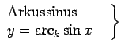 | 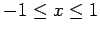 | 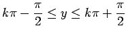 | 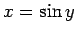 |
| 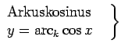 | 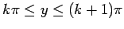 | 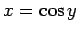 | |
| 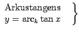 | 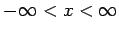 | 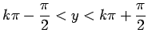 | 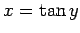 |
| 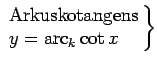 | 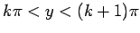 | 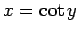 | |
| 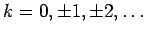 . Für k=0 erhält man den Hauptwert der jeweiligen zyklometrischen Funktion, der ohne Index geschrieben wird (z.B. 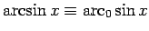). |
|||